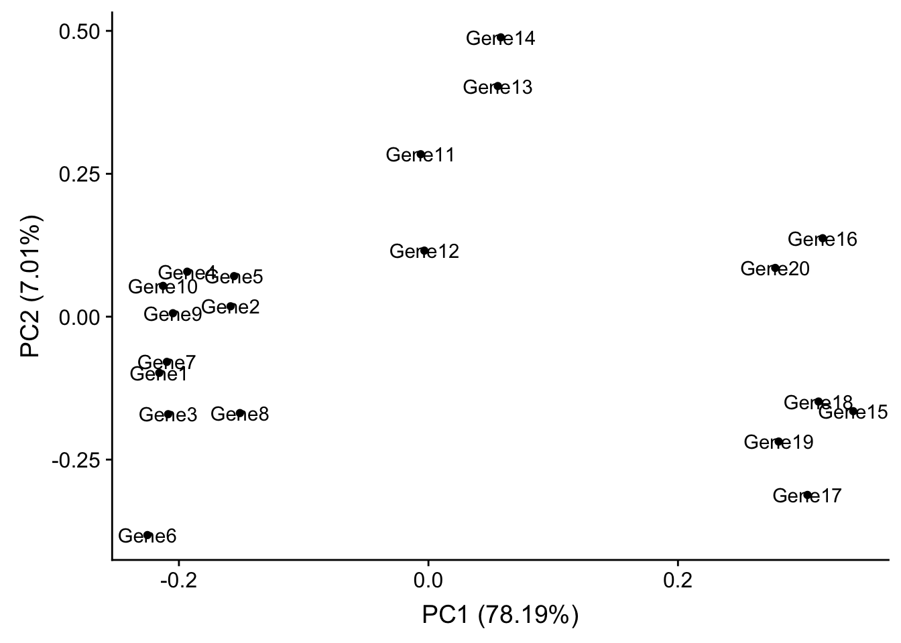

7 Introduction R/Bioconductor
- R/Rstudio parts
- Data Types and classes
- Packages and where to get them
- S3 vs S4
- Visualizations and ggplot
7.1 Installing packages
7.1.1 CRAN
The Comprehensive R Archive Network CRAN is the biggest archive of R packages. There are few requirements for uploading packages besides building and installing succesfully, hence documentation and support is often minimal and figuring how to use these packages can be a challenge it itself. CRAN is the default repository R will search to find packages to install:
install.packages("devtools")
require("devtools")7.1.2 Github
Github isn’t specific to R, any code of any type in any state can be uploaded. There is no guarantee a package uploaded to github will even install, nevermind do what it claims to do. R packages can be downloaded and installed directly from github using the “devtools” package installed above.
devtools::install_github("tallulandrews/M3Drop")Github is also a version control system which stores multiple versions of any package. By default the most recent “master” version of the package is installed. If you want an older version or the development branch this can be specified using the “ref” parameter:
# different branch
devtools::install_github("tallulandrews/M3D", ref="nbumi")
# previous commit
devtools::install_github("tallulandrews/M3Drop", ref="434d2da28254acc8de4940c1dc3907ac72973135")Note: make sure you re-install the M3Drop master branch for later in the course.
7.1.3 Bioconductor
Bioconductor is a repository of R-packages specifically for biological analyses. It has the strictest requirements for submission, including installation on every platform and full documentation with a tutorial (called a vignette) explaining how the package should be used. Bioconductor also encourages utilization of standard data structures/classes and coding style/naming conventions, so that, in theory, packages and analyses can be combined into large pipelines or workflows.
Bioconductor also requires creators to support their packages and has a regular 6-month release schedule. Make sure you are using the most recent release of bioconductor before trying to install packages for the course.
## >= R 3.5.0
if (!requireNamespace("BiocManager", quietly = TRUE))
install.packages("BiocManager")
BiocManager::install("MAST", version = "3.8")7.1.4 Source
The final way to install packages is directly from source. In this case you have to download a fully built source code file, usually packagename.tar.gz, or clone the github repository and rebuild the package yourself. Generally this will only be done if you want to edit a package yourself, or if for some reason the former methods have failed.
install.packages("M3Drop_3.05.00.tar.gz", type="source")7.2 Installation instructions:
All the packages necessary for this course are available here. Starting from “RUN Rscript -e”install.packages(‘devtools’)" “, run each of the commands (minus”RUN“) on the command line or start an R session and run each of the commands within the quotation marks. Note the ordering of the installation is important in some cases, so make sure you run them in order from top to bottom.
7.3 Data-types/classes
R is a high level language so the underlying data-type is generally not important. The exception if you are accessing R data directly using another language such as C, but that is beyond the scope of this course. Instead we will consider the basic data classes: numeric, integer, logical, and character, and the higher level data class called “factor”. You can check what class your data is using the “class()” function.
Aside: R can also store data as “complex” for complex numbers but generally this isn’t relevant for biological analyses.
7.3.1 Numeric
The “numeric” class is the default class for storing any numeric data - integers, decimal numbers, numbers in scientific notation, etc…
x = 1.141
class(x)## [1] "numeric"y = 42
class(y)## [1] "numeric"z = 6.02e23
class(z)## [1] "numeric"Here we see that even though R has an “integer” class and 42 could be stored more efficiently as an integer the default is to store it as “numeric”. If we want 42 to be stored as an integer we must “coerce” it to that class:
y = as.integer(42)
class(y)## [1] "integer"Coercion will force R to store data as a particular class, if our data is incompatible with that class it will still do it but the data will be converted to NAs:
as.numeric("H")## Warning: NAs introduced by coercion## [1] NAAbove we tried to coerce “character” data, identified by the double quotation marks, into numeric data which doesn’t make sense, so we triggered (“threw”) an warning message. Since this is only a warning R would continue with any subsequent commands in a script/function, whereas an “error” would cause R to halt.
7.3.2 Character/String
The “character” class stores all kinds of text data. Programing convention calls data containing multiple letters a “string”, thus most R functions which act on character data will refer to the data as “strings” and will often have “str” or “string” in it’s name. Strings are identified by being flanked by double quotation marks, whereas variable/function names are not:
x = 5
a = "x" # character "x"
a## [1] "x"b = x # variable x
b## [1] 5In addition to standard alphanumeric characters, strings can also store various special characters. Special characters are identified using a backlash followed by a single character, the most relevant are the special character for tab : \t and new line : \n. To demonstrate the these special characters lets concatenate (cat) together two strings with these characters separating (sep) them:
cat("Hello", "World", sep= " ")## Hello Worldcat("Hello", "World", sep= "\t")## Hello Worldcat("Hello", "World", sep= "\n")## Hello
## WorldNote that special characters work differently in different functions. For instance the paste function does the same thing as cat but does not recognize special characters.
paste("Hello", "World", sep= " ")## [1] "Hello World"paste("Hello", "World", sep= "\t")## [1] "Hello\tWorld"paste("Hello", "World", sep= "\n")## [1] "Hello\nWorld"Single or double backslash is also used as an escape character to turn off special characters or allow quotation marks to be included in strings:
cat("This \"string\" contains quotation marks.")## This "string" contains quotation marks.Special characters are generally only used in pattern matching, and reading/writing data to files. For instance this is how you would read a tab-separated file into R.
dat = read.delim("file.tsv", sep="\t")Another special type of character data are colours. Colours can be specified in three main ways: by name from those available, by red, green, blue values using the rgb function, and by hue (colour), saturation (colour vs white) and value (colour/white vs black) using the hsv function. By default rgb and hsv expect three values in 0-1 with an optional fourth value for transparency. Alternatively, sets of predetermined colours with useful properties can be loaded from many different packages with RColorBrewer being one of the most popular.
reds = c("red", rgb(1,0,0), hsv(0, 1, 1))
reds## [1] "red" "#FF0000" "#FF0000"barplot(c(1,1,1), col=reds, names=c("by_name", "by_rgb", "by_hsv"))
7.3.3 Logical
The logical class stores boolean truth values, i.e. TRUE and FALSE. It is used for storing the results of logical operations and conditional statements will be coerced to this class. Most other data-types can be coerced to boolean without triggering (or “throwing”) error messages, which may cause unexpected behaviour.
x = TRUE
class(x)## [1] "logical"y = "T"
as.logical(y)## [1] TRUEz = 5
as.logical(z)## [1] TRUEx = FALSE
class(x)## [1] "logical"y = "F"
as.logical(y)## [1] FALSEz = 0
as.logical(z)## [1] FALSEExercise 1 Experiment with other character and numeric values, which are coerced to TRUE or FALSE? which are coerced to neither? Do you ever throw a warning/error message?
7.3.4 Factors
String/Character data is very memory inefficient to store, each letter generally requires the same amount of memory as any integer. Thus when storing a vector of strings with repeated elements it is more efficient assign each element to an integer and store the vector as integers and an additional string-to-integer association table. Thus, by default R will read in text columns of a data table as factors.
str_vector = c("Apple", "Apple", "Banana", "Banana", "Banana", "Carrot", "Carrot", "Apple", "Banana")
factored_vector = factor(str_vector)
factored_vector## [1] Apple Apple Banana Banana Banana Carrot Carrot Apple Banana
## Levels: Apple Banana Carrotas.numeric(factored_vector)## [1] 1 1 2 2 2 3 3 1 2The double nature of factors can cause some unintuitive behaviour. E.g. joining two factors together will convert them to the numeric form and the original strings will be lost.
c(factored_vector, factored_vector)## [1] 1 1 2 2 2 3 3 1 2 1 1 2 2 2 3 3 1 2Likewise if due to formatting issues numeric data is mistakenly interpretted as strings, then you must convert the factor back to strings before coercing to numeric values:
x = c("20", "25", "23", "38", "20", "40", "25", "30")
x = factor(x)
as.numeric(x)## [1] 1 3 2 5 1 6 3 4as.numeric(as.character(x))## [1] 20 25 23 38 20 40 25 30To make R read text as character data instead of factors set the environment option stringsAsFactors=FALSE. This must be done at the start of each R session.
options(stringsAsFactors=FALSE)Exercise How would you use factors to create a vector of colours for an arbitrarily long vector of fruits like str_vector above? Answer
7.3.5 Checking class/type
We recommend checking your data is of the correct class after reading from files:
x = 1.4
is.numeric(x)## [1] TRUEis.character(x)## [1] FALSEis.logical(x)## [1] FALSEis.factor(x)## [1] FALSE7.4 Basic data structures
So far we have only looked at single values and vectors. Vectors are the simplest data structure in R. They are a 1-dimensional array of data all of the same type. If the input when creating a vector is of different types it will be coerced to the data-type that is most consistent with the data.
x = c("Hello", 5, TRUE)
x## [1] "Hello" "5" "TRUE"class(x)## [1] "character"Here we tried to put character, numeric and logical data into a single vector so all the values were coerced to character data.
A matrix is the two dimensional version of a vector, it also requires all data to be of the same type. If we combine a character vector and a numeric vector into a matrix, all the data will be coerced to characters:
x = c("A", "B", "C")
y = c(1, 2, 3)
class(x)## [1] "character"class(y)## [1] "numeric"m = cbind(x, y)
m## x y
## [1,] "A" "1"
## [2,] "B" "2"
## [3,] "C" "3"The quotation marks indicate that the numeric vector has been coerced to characters. Alternatively, to store data with columns of different data-types we can use a dataframe.
z = data.frame(x, y)
z## x y
## 1 A 1
## 2 B 2
## 3 C 3class(z[,1])## [1] "character"class(z[,2])## [1] "numeric"If you have set stringsAsFactors=FALSE as above you will find the first column remains characters, otherwise it will be automatically converted to a factor.
options(stringsAsFactors=TRUE)
z = data.frame(x, y)
class(z[,1])## [1] "factor"Another difference between matrices and dataframes is the ability to select columns using the $ operator:
m$x # throws an error
z$x # okThe final basic data structure is the list. Lists allow data of different types and different lengths to be stored in a single object. Each element of a list can be any other R object : data of any type, any data structure, even other lists or functions.
l = list(m, z)
ll = list(sublist=l, a_matrix=m, numeric_value=42, this_string="Hello World", even_a_function=cbind)
ll## $sublist
## $sublist[[1]]
## x y
## [1,] "A" "1"
## [2,] "B" "2"
## [3,] "C" "3"
##
## $sublist[[2]]
## x y
## 1 A 1
## 2 B 2
## 3 C 3
##
##
## $a_matrix
## x y
## [1,] "A" "1"
## [2,] "B" "2"
## [3,] "C" "3"
##
## $numeric_value
## [1] 42
##
## $this_string
## [1] "Hello World"
##
## $even_a_function
## function (..., deparse.level = 1)
## .Internal(cbind(deparse.level, ...))
## <bytecode: 0x102bae238>
## <environment: namespace:base>Lists are most commonly used when returning a large number of results from a function that do not fit into any of the previous data structures.
7.5 More information
You can get more information about any R commands relevant to these datatypes using by typing ?function in an interactive session.
7.6 Bioconductor S4 Classes
- Introduction
- Object-Oriented Programming in R
- Role of S4 in Bioconductor
- S4 Basics
- S4 Classes
- S4 Generic Functions & Methods
- S4 Exercises
- S4 Constraints
- Copy on Slot Modification
- Object Overhead
- Method Dispatch
- S4 Case Studies
- Slot-Oriented Virtual Class (eSet)
- Method-Oriented Virtual Class (Sequence)
- Multiple Inheritance & Vectorization (CompressedIRangesList)
- Build or Reuse? (CompresssedIRangesList)
- Class Union & Group Generic (Rle)
7.6.1 S4 Basics
7.6.2 S4 Case Studies
7.6.3 S4 Exercises
7.7 Grammer of Graphics (ggplot2)
7.7.1 What is ggplot2?
ggplot2 is an R package designed by Hadley Wickham which facilitates data plotting. In this lab, we will touch briefly on some of the features of the package. If you would like to learn more about how to use ggplot2, we would recommend reading “ggplot2 Elegant graphics for data analysis”, by Hadley Wickham.
7.7.2 Principles of ggplot2
- Your data must be a dataframe if you want to plot it using ggplot2.
- Use the
aesmapping function to specify how variables in the dataframe map to features on your plot - Use geoms to specify how your data should be represented on your graph eg. as a scatterplot, a barplot, a boxplot etc.
7.7.3 Using the aes mapping function
The aes function specifies how variables in your dataframe map to features on your plot. To understand how this works, let’s look at an example:
library(ggplot2)
library(tidyverse)
set.seed(1)
counts <- as.data.frame(matrix(rpois(100, lambda = 10), ncol=10, nrow=10))
Gene_ids <- paste("gene", 1:10, sep = "")
colnames(counts) <- paste("cell", 1:10, sep = "")
counts<-data.frame(Gene_ids, counts)
counts## Gene_ids cell1 cell2 cell3 cell4 cell5 cell6 cell7 cell8 cell9 cell10
## 1 gene1 8 8 3 5 5 9 11 9 13 6
## 2 gene2 10 2 11 13 12 12 7 13 12 15
## 3 gene3 7 8 13 8 9 9 9 5 15 12
## 4 gene4 11 10 7 13 12 12 12 8 11 12
## 5 gene5 14 7 8 9 11 10 13 13 5 11
## 6 gene6 12 12 11 15 8 7 10 9 10 15
## 7 gene7 11 11 14 11 11 5 9 13 13 7
## 8 gene8 9 12 9 8 6 14 7 12 12 10
## 9 gene9 14 12 11 7 10 10 8 14 7 10
## 10 gene10 11 10 9 7 11 16 8 7 7 4ggplot(data = counts, mapping = aes(x = cell1, y = cell2))
Let’s take a closer look at the final command, ggplot(data = counts, mapping = aes(x = cell1, y = cell2)). ggplot() initialises a ggplot object and takes the arguments data and mapping. We pass our dataframe of counts to data and use the aes() function to specify that we would like to use the variable cell1 as our x variable and the variable cell2 as our y variable.
Task 1: Modify the command above to initialise a ggplot object where cell10 is the x variable and cell8 is the y variable.
Clearly, the plots we have just created are not very informative because no data is displayed on them. To display data, we will need to use geoms.
7.7.4 Geoms
We can use geoms to specify how we would like data to be displayed on our graphs. For example, our choice of geom could specify that we would like our data to be displayed as a scatterplot, a barplot or a boxplot.
Let’s see how our graph would look as a scatterplot.
ggplot(data = counts, mapping = aes(x = cell1, y = cell2)) + geom_point()
Now we can see that there doesn’t seem to be any correlation between gene expression in cell1 and cell2. Given we generated counts randomly, this isn’t too surprising.
Task 2: Modify the command above to create a line plot. Hint: execute ?ggplot and scroll down the help page. At the bottom is a link to the ggplot package index. Scroll through the index until you find the geom options.
7.7.5 Plotting data from more than 2 cells
So far we’ve been considering the gene counts from 2 of the cells in our dataframe. But there are actually 10 cells in our dataframe and it would be nice to compare all of them. What if we wanted to plot data from all 10 cells at the same time?
At the moment we can’t do this because we are treating each individual cell as a variable and assigning that variable to either the x or the y axis. We could create a 10 dimensional graph to plot data from all 10 cells on, but this is a) not possible to do with ggplot and b) not very easy to interpret. What we could do instead is to tidy our data so that we had one variable representing cell ID and another variable representing gene counts, and plot those against each other. In code, this would look like:
counts<-gather(counts, colnames(counts)[2:11], key = 'Cell_ID', value='Counts')
head(counts)## Gene_ids Cell_ID Counts
## 1 gene1 cell1 8
## 2 gene2 cell1 10
## 3 gene3 cell1 7
## 4 gene4 cell1 11
## 5 gene5 cell1 14
## 6 gene6 cell1 12Essentially, the problem before was that our data was not tidy because one variable (Cell_ID) was spread over multiple columns. Now that we’ve fixed this problem, it is much easier for us to plot data from all 10 cells on one graph.
ggplot(counts,aes(x=Cell_ID, y=Counts)) + geom_boxplot()
Task 3: Use the updated counts dataframe to plot a barplot with Cell_ID as the x variable and Counts as the y variable. Hint: you may find it helpful to read ?geom_bar.
Task 4: Use the updated counts dataframe to plot a scatterplot with Gene_ids as the x variable and Counts as the y variable.
7.7.6 Plotting heatmaps
A common method for visualising gene expression data is with a heatmap. Here we will use the R package pheatmap to perform this analysis with some gene expression data we will name test.
library(pheatmap)
set.seed(2)
test = matrix(rnorm(200), 20, 10)
test[1:10, seq(1, 10, 2)] = test[1:10, seq(1, 10, 2)] + 3
test[11:20, seq(2, 10, 2)] = test[11:20, seq(2, 10, 2)] + 2
test[15:20, seq(2, 10, 2)] = test[15:20, seq(2, 10, 2)] + 4
colnames(test) = paste("Cell", 1:10, sep = "")
rownames(test) = paste("Gene", 1:20, sep = "")
pheatmap(test)Let’s take a moment to work out what this graphic is showing us. Each row represents a gene and each column represents a cell. How highly expressed each gene is in each cell is represented by the colour of the corresponding box. For example, we can tell from this plot that gene18 is highly expressed in cell10 but lowly expressed in cell1.
This plot also gives us information on the results of a clustering algorithm. In general, clustering algorithms aim to split datapoints (eg.cells) into groups whose members are more alike one another than they are alike the rest of the datapoints. The trees drawn on the top and left hand sides of the graph are the results of clustering algorithms and enable us to see, for example, that cells 4,8,2,6 and 10 are more alike one another than they are alike cells 7,3,5,1 and 9. The tree on the left hand side of the graph represents the results of a clustering algorithm applied to the genes in our dataset.
If we look closely at the trees, we can see that eventually they have the same number of branches as there are cells and genes. In other words, the total number of cell clusters is the same as the total number of cells, and the total number of gene clusters is the same as the total number of genes. Clearly, this is not very informative, and will become impractical when we are looking at more than 10 cells and 20 genes. Fortunately, we can set the number of clusters we see on the plot. Let’s try setting the number of gene clusters to 2:
pheatmap(test, kmeans_k = 2)Now we can see that the genes fall into two clusters - a cluster of 8 genes which are upregulated in cells 2, 10, 6, 4 and 8 relative to the other cells and a cluster of 12 genes which are downregulated in cells 2, 10, 6, 4 and 8 relative to the other cells.
Task 5: Try setting the number of clusters to 3. Which number of clusters do you think is more informative?
7.7.7 Principal Component Analysis
Principal component analysis (PCA) is a statistical procedure that uses a transformation to convert a set of observations into a set of values of linearly uncorrelated variables called principal components. The transformation is carried out so that the first principle component accounts for as much of the variability in the data as possible, and each following principle component accounts for the greatest amount of variance possible under the contraint that it must be orthogonal to the previous components.
PCA plots are a good way to get an overview of your data, and can sometimes help identify confounders which explain a high amount of the variability in your data. We will investigate how we can use PCA plots in single-cell RNA-seq analysis in more depth in a future lab, here the aim is to give you an overview of what PCA plots are and how they are generated.
Let’s make a PCA plot for our test data. We can use the ggfortify package to let ggplot know how to interpret principle components.
library(ggfortify)
Principal_Components<-prcomp(test)
autoplot(Principal_Components, label=TRUE)
Task 6: Compare your clusters to the pheatmap clusters. Are they related? (Hint: have a look at the gene tree for the first pheatmap we plotted)
Task 7: Produce a heatmap and PCA plot for counts (below):
set.seed(1)
counts <- as.data.frame(matrix(rpois(100, lambda = 10), ncol=10, nrow=10))
rownames(counts) <- paste("gene", 1:10, sep = "")
colnames(counts) <- paste("cell", 1:10, sep = "")